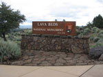
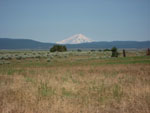
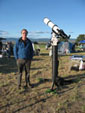
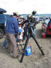
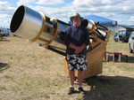
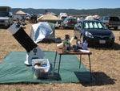
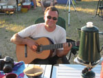
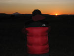

I had decided to spend the night of Friday, June 19 in Redding, at the Best Western Hilltop Inn, in order to arrive rested in Adin on Saturday. On Friday night, I enjoyed a nice dinner with David Cooper, who was also staying at the same hotel.
The short drive to Adin on Saturday morning was uneventful, and I arrived at the camp site around noon, promptly setting up my tent on Uranus row. Since the weather outlook was not looking very promising at the time, I made the decision to leave my scope in the car. This turned out to be a smart move because Saturday night was wild, with lightning, heavy rain, and even hail! My small tent handled the elements remarkably well, and I remained dry all night, unlike a few others…
On Sunday afternoon, Rogelio, David and I visited the Lava Beds National Monument. This was a fun outing, although it was a fairly long drive (3 hours round trip from Adin) During the day, the weather forecast gradually improved, and the sky turned mostly clear after sunset. Because of a few high altitude clouds, the sky that night was not nearly as dark as it could have been. I got NELM 6.7 in Hercules.
Monday night was slightly better. Alvin and I both got NELM 6.9. This was still a bit disappointing. Under such dark skies, when the conditions are ideal, one can get NELM 7.5. Tuesday night was probably the best one. After a really hot day, I got NELM 7.0 in Hercules. The milky way looked absolutely gorgeous, all the way down to the southern horizon. The seeing was about average on all three nights, although it felt a little more solid on the last night.
I had put together a list of about 60 objects, most of which from the Herschel 400, containing mostly galaxies, nebulae and globular clusters. I did not want to observe too many open clusters from such a dark site, because those can be observed under less than ideal skies from the bay area. I ended up observing about 40 of those objects, leaving enough time for some free-style eye candy that I did not log. Some of the highlights include observing the central star in M57, as well as the nearby IC 1296 galaxy in Alvin Huey’s 22″ scope. The crescent nebula was also putting on quite a show through my scope using an OIII filter. Finally, seeing both arches of the veil nebula in one field of view through David’s 80mm refractor was really amazing!
This was my first out of town multi-day star party, and I thoroughly enjoyed it. Most of all, it was really great to finally meet a lot of TACos in person. The food cattered by our host, the owners of the Frosty Acres ranch, was absolutely delicious. The shower truck was awesome! A big thank you to the GSSP organizing committee for putting together the star party, and to David Cooper, who shared his canopy, and saved me from getting burnt by the Sun…









Location: Adin, CA [Elevation 4200 ft]
Telescope: Meade Lightbridge 12″ F/5
Eyepieces used:
– Televue Panoptic 27mm (56x – 1.2° TFOV)
– Televue Nagler 16mm type 5 (95x – 52′ TFOV)
– Televue Nagler 9mm type 6 (169x – 29′ TFOV)
– Televue Nagler 7mm type 6 (217x – 22′ TFOV)
– Televue Nagler 5mm type 6 (305x – 16′ TFOV)
(All times are PDT)
June 21, 2009
NGC 4736 (M 94) GX CVn 12h51m21.2s +41°04’14” 8.7 mag 10:50p
Very bright, fairly large, very slightly elongated WNW-ESE. Gradually brighter to a relatively large, round and very bright core.
NGC 5195 GX CVn 13h30m25.2s +47°13’10” 10.5 mag 11:00p
Bright stellar core surrounded by an assymetrical halo, fairly bright on the west side, very dim on the east side where this galaxy connects to M51. The nucleus is slightly off center to the south.
NGC 5248 GX Boö 13h38m02.1s +08°50’10” 10.9 mag 11:10p
Moderately large and bright, elongated 2×1 NW-SE. Fairly bright small round core, surrounded by a halo showing hints of two far-flung spiral arms, the one on the NW side being the most obvious. Very faint (15.4 mag) superimposed star about 30″ N of the core.
NGC 5557 GX Boö 14h18m51.2s +36°27’06” 11.9 mag 11:20p
Small, moderately bright, round halo, gradually brighter to a stellar nucleus seen using direct vision during brief moments of better seeing. Fairly faint superimposed star about 30″ SE.
NGC 5676 GX Boö 14h33m09.0s +49°25’04” 11.9 mag 11:35p
Moderately bright and large, elongated 3×1 NE-SW, very uniform. Very faint stellar nucleus.
NGC 5689 GX Boö 14h35m51.9s +48°42’07” 12.7 mag 11:45p
Small, moderately bright, elongated 3×1 E-W, fairly bright almost stellar core.
NGC 7000 (North American Nebula) BN Cyg 20h58m52.1s +44°24’33” 4.0 mag 12:05a
[Using David Cooper’s William Optics 80ED F/6.8 refractor + Televue Panoptic 27mm + Lumicon OIII filter] Very easily seen, fits nicely in the 3.5 degree field of view. Very reminiscent of photographs. The “central america” “north eastern United States” and “north western United States” regions are brighter. The “Florida” region is surprinsingly dim. The entire nebula is “peppered” with fairly bright stars.
NGC 6543 (Cat’s Eye Nebula) PN Dra 17h58m36.6s +66°37’54” 8.3 mag 12:25a
Very small, very bright, elongated 4:3 N-S, blue-green color at low power (95x) Central star seen very briefly during moments of better seeing. The use of an OIII filter shows the central region a little darker.
NGC 6207 GX Her 16h43m26.3s +36°48’53” 11.9 mag 01:15a
Small, moderately faint, elongated 3×1 NNE-SSW, fairly uniform halo. Bright stellar nucleus or superimposed star (photographs show that it is a 13 mag superimposed star, not the actual nucleus of that galaxy) Fits beautifully along M13 in the 1.2 degree field of view of the Televue Panoptic 27mm.
NGC 6229 GC Her 16h47m17.5s +47°30’42” 9.4 mag 01:25a
Fairly small and bright, unresolved but appears “powdery” with a few stars coming in and out of view during brief moments of better seeing.
NGC 6781 PN Aql 19h18m58.0s +06°33’21” 11.8 mag 01:35a
Fairly large planetary nebula. Fairly uniform, round. Southern rim is slightly brighter and better defined than the northern rim. The center region appears slightly darker.
June 22, 2009
NGC 5897 GC Lib 15h17m58.8s -21°02’51” 8.4 mag 10:50p
Moderately large, fairly uniform, fairly low surface brightness. A few bright stars are resolved over a milky background at 95x and 169x.
NGC 3147 GX Dra 10h17m41.3s +73°21’25” 11.3 mag 11:00p
Small, moderately bright, round, gradually brighter to a fairly large core. At 169x, the halo seems slightly elongated NW-SE.
NGC 5866 (M 102) GX Dra 15h06m47.6s +55°43’42” 10.7 mag 11:15p
Fairly large and bright, elongated 3×1 WNW-ESE. Fairly large central concentration. Forms an equilateral triangle with two fairly bright stars (mag 7.7 and 9.2)
NGC 5907 (Splinter Galaxy) GX Dra 15h16m11.0s +56°17’44” 11.1 mag 11:25p
Fairly large, moderately bright edge-on galaxy. Elongated roughly 10×1 NNW-SSE. Weak central concentration/bulge. Hints of a dark lane at 217x. Eastern half of the bulge appears brighter. Fairly faint star (14.5 mag) about 1′ WSW of bulge. Reminiscent of NGC 4565, although not as impressive.
NGC 5982 GX Dra 15h38m54.3s +59°19’35” 12.0 mag 11:35p
Small, fairly bright, with a relatively large core surrounded by a halo slightly elongated E-W. Forms a beautiful trio with NGC 5981 and NGC 5985. The members of this group show obvious differences in morphology.
NGC 6451 (Tom Thumb Cluster) OC Sco 17h51m20.2s -30°12’48” 8.2 mag 12:05a
Fairly small, composed of about 30 moderately bright stars. Overall shape reminds me of an arrowhead. A large dark lane splits this cluster in the N-S direction.
NGC 6755 OC Aql 19h08m19.4s +04°16’53” 8.6 mag 12:35a
About 30 fairly bright stars scattered within 15′. Irregular shape, several dark lanes. Located about 40′ SSE of NGC 6756.
NGC 6756 OC Aql 19h09m12.3s +04°43’12” 10.6 mag 12:35a
Very compact group of relatively faint stars (could not get a reliable star count) surrounded by a darker ring and a few moderately bright stars.
NGC 6826 (Blinking Planetary) PN Cyg 19h45m05.7s +50°32’47” 8.8 mag 01:10a
Small, very bright, roundish, very slightly elongated WNW-ESE. Blue/green color seen at 169x. Fairly bright central star. Blinking effect noticed easily. OIII filter shows hints of an extremely faint outer shell (?)
NGC 6946 GX Cyg 20h35m06.8s +60°11’02” 9.8 mag 01:25a
Fairly large galaxy with a relatively low surface brightness, elongated 3:2 E-W. Very weak, moderately large central concentration. Two spiral arms seen pretty easily E and W of the core. Situated in a rich star field. Forms a superb couple with open cluster NGC 6939. Both objects can be seen within the 1.2 degree field of view of the Panoptic 27mm.
NGC 7008 PN Cyg 21h00m51.0s +54°34’41” 12.0 mag 01:40a
Relatively large and pretty bright planetary nebula. Appears elongated 2×1 N-S at low power. Using a higher magnification and an OIII filter, I can see 2 lobes positioned on a N-S line, the one to the north being the bigger and brighter one. Without the narrow band filter, the central star was easily detected, as well as a superimposed star to the ENE and 2 fairly bright stars located SE of the nebula. This object is also called the Fetus Nebula.
NGC 6905 PN Del 20h22m50.2s +20°08’04” 12.0 mag 01:55a
Fairly small, moderately bright, almost round, very slightly elongated N-S. The disk is not perfectly uniform. The eastern portion of the nebula is brighter, while the southern and especially the northern regions are slightly darker. Fairly faint central star.
NGC 6118 GX Ser 16h22m20.2s -02°18’27” 12.4 mag 02:05a
Moderately large, very low surface brightness, elongated 2×1 almost E-W, very uniform. Extremely weak central concentration detected at 169x. Fairly faint (15.2 mag) superimposed star located about 2′ E of the core.
June 23, 2009
NGC 5466 GC Boö 14h05m54.2s +28°29’25” 9.2 mag 10:30p
Detected in 9×50 finder scope. Fairly large. Fairly uniform low surface brightness. Brighter stars resolved at 95x. A few more stars visible at 169x. Appears irregular in shape.
NGC 6171 (M 107) GC Oph 16h33m06.1s -13°04’30” 7.8 mag 10:40p
Detected in 9×50 finder scope. Moderately large and bright. Best seen at 219x. Moderately dense, pretty well resolved.
NGC 6235 GC Oph 16h54m01.5s -22°11’38” 8.9 mag 10:50p
Pretty small and faint. At 219x, a few brighter stars are resolved using averted vision. Appears slightly triangular in shape…
NGC 6284 GC Oph 17h05m06.3s -24°46’47” 8.9 mag 11:00p
Pretty small and faint haze surrounding a moderately bright unresolved core. At higher magnification, a few stars are resolved in the outer halo.
NGC 6273 (M 19) GC Oph 17h03m15.7s -26°17’01” 6.8 mag 11:05p
Spotted in 9×50 finder scope while looking for NGC 6284. Pretty large and bright, low surface brightness gradient. A large number of stars are resolved throughout at higher magnification.
NGC 6293 GC Oph 17h10m47.9s -26°35’42” 8.3 mag 11:10p
Pretty small, moderately bright, intense core, outer region partially resolved at 219x.
NGC 6287 GC Oph 17h05m45.7s -22°43’22” 9.3 mag 11:15p
Pretty small and faint, relatively uniform, located at the southern edge of a region devoid of stars (B51/B47 dark nebulae?) Takes on a powdery appearance at 219x, especially its eastern region, with a few stars coming in and out of view.
NGC 6304 GC Oph 17h15m10.8s -29°28’27” 8.3 mag 11:20p
Pretty small, moderately bright, relatively uniform, unresolved at 219x, powdery appearance.
NGC 6316 GC Oph 17h17m15.4s -28°09’07” 8.1 mag 11:25p
Very small, moderately bright, broad central concentration, unresolved. Located 1′ WNW of a fairly bright (mag 11.4) star and 1′ E of a slightly fainter (mag 12.3) star.
NGC 6342 GC Oph 17h21m46.0s -19°35’50” 9.5 mag 11:30p
Very small, fairly faint, relatively bright core, unresolved. Located just 1′ NNE of a moderately bright (mag 12) star, and just south of B259.
NGC 6356 GC Oph 17h24m10.6s -17°49’24” 8.2 mag 11:35p
Moderately large and bright, relatively bright core, unresolved (this object was low over the horizon when I observed it, so the bad seeing didn’t help)
NGC 6355 GC Oph 17h24m35.9s -26°21’48” 8.6 mag 11:40p
Very small, pretty faint, relatively uniform, unresolved, apparently located behind a dark cloud.
NGC 6144 GC Sco 16h27m51.2s -26°02’42” 9.0 mag 11:45p
Small, faint, right near Antares and M4. At 217x, about a dozen or so brighter stars are resolved over a milky background. Both M4 and NGC 6144 fit in the same 1.2 degree field of view generated by the Panoptic 27mm.
NGC 6369 (Little Ghost Nebula) PN Oph 17h29m57.6s -23°46’05” 11.0 mag 11:50p
Pretty small, pretty faint, round, uniform, looks like an out of focus star at 95x. Delicate ring structure suspected, confirmed at 219x using a UHC filter. I did not see the central star. Northern rim looks very slightly brighter. Reminiscent of M57, but much smaller.
NGC 6401 GC Oph 17h39m14.3s -23°54’59” 7.4 mag 12:00a
Small, pretty faint, almost completely uniform. Moderately bright (mag 12) superimposed star very slightly off center toward ESE.
NGC 6426 GC Oph 17h45m24.7s +03°09’56” 10.9 mag 12:10a
Fairly small, surprisingly faint and uniform. Very weak central concentration. A few very faint stars pop in and out of view around the edge of the halo.
NGC 6517 GC Oph 18h02m24.5s -08°57’32” 10.1 mag 12:15a
Small, fairly faint, small and relatively bright core, unresolved.
NGC 6633 OC Oph 18h27m44.9s +06°30’49” 5.6 mag 12:20a
Best seen at low power (Panoptic 27mm) Easily spotted in 9×50 finder scope. About 30 bright stars of comparable brightness, along with many fainter stars, are scattered within about 25′.

{kind=link}